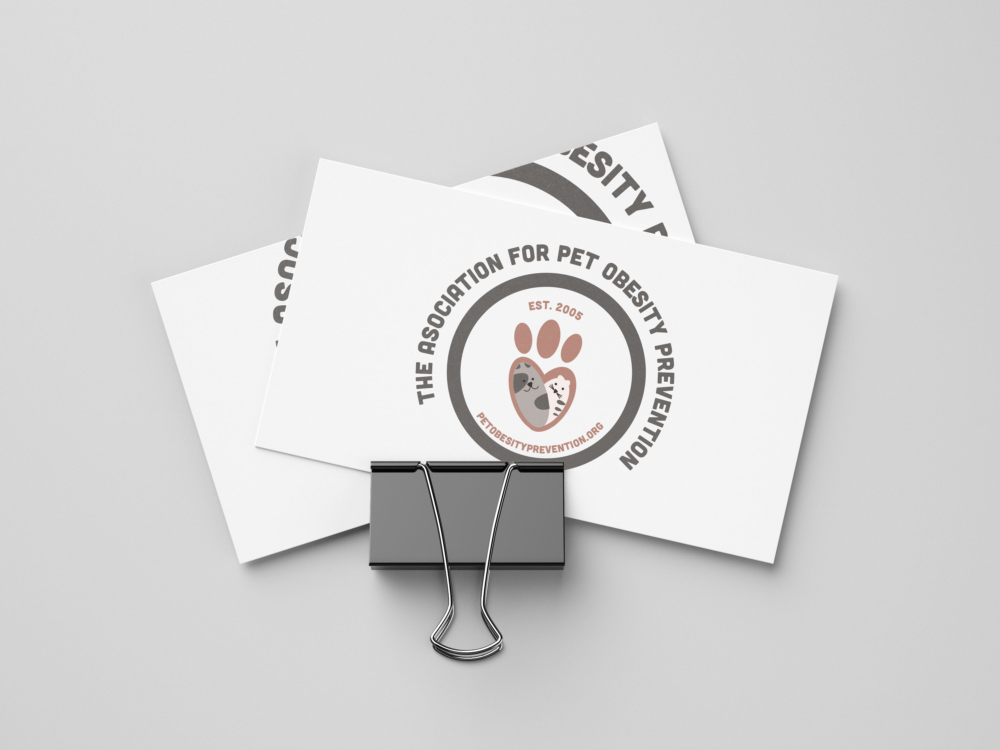

UX CASE STUDY

INTERACTIVE VIDEO MENU

ILLUSTRATOR /
PHOTOSHOP
Objective: One of the problems I had to face was that the company did not have any other elements to work on, they only noticed who was their persona and they gave me absolute freedom to work on the Design and make a proposal. The most important thing for me was to think about people at that stage is wearing glasses, therefore the letters should be bigger, colours might need to be classic, to me was very important in every step to consider and thinking like my persona and possible limitations like her sight could be in our way? big buttons? My questions were about the colours I choose? is my persona wearing glasses? the description did not mention any disability but I wanted to take into consideration the most common situations for a person of that age, the intended outcome was to have a lovely experience from the website and felt that was an easy navigation. All out how you collaborated with your team and *gasp* how you invited them into your research process. result: Briefly (again) describe your insights and how you translated them into product opportunities or recommendations. Who did you collaborate with on these? Demonstrate what strategy/product decisions you influenced through your research. In a perfect world, you have access to changes in metrics (e.g., revenue, subscriptions, user engagement, time spent), but we're not all that fortunate.
Work: I worked in constant communication with the company. One of the biggest constraints about Maynooth it is that has a solid reputation among the community, besides the information was very clear and organized, it was very easy to go back as many times as I needed. My constraints was that our participants were ladies about the same age, all of them nearly retired with a very similar lifestyle as my user persona. Once the analysis was run I realized that there were some details on the work done but I was able to change with any inconvenience as I was looking at my statistics and see where we're red lights on the website. I rearranged the poll until the interviewers could complete the task without any instructions provided for this we had to divide the interviews into 3 stages, the first one we introduce the company and if they say they already knew the company they were asked to respond to another questionnaire and tell them there would be and finally the third point was to complete the task. I had to be flexible at all time as sometimes I will get support from our team. We had a very versatile team, I was very proud to say everyone was very excited about the project outcome.
Reflection: After my team and I finished the project, we were very satisfied to see the response on polls and questionnaires we made, and also chatting with the range of people from our Persona, we felt we achieve a great outcome, I believe that my biggest lesson I learned was to listen attentively and take every comment and points of views into a consideration, as well with data to make changes and decisions effectively.

INTERACTIVE VIDEO MOVIE
INTERACTIVE CHRISTMAS CARD
Photoshop Manipulation

Pet Asociation Logo